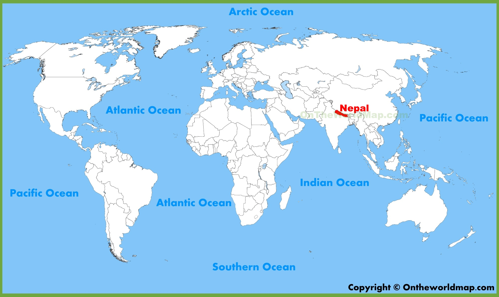

Hello,I am Sishir Pokhrel. I am a junior Computer Science student currently enrolled in University of Monroe. My main center of interests lies in Cyber Security and Machine Learning. I have done few projects in those fields, and if you are interested, you can click on "My Projects" option on menu above. You can view my resume on by clicking on Online resume option on menu above which is at Second page.Please feel free to leave any comments and suggestions on Feedback page.
ABOUT ME !!!

I am from Nepal.
Do you know where it is?

It lies in the South-Eastern part of Asia on the globle.
My Achievements Includes:

Sucessfully completed ethical hacking course and passed CEH exam. My team was declared winners of Phishing Contest at ULM's InfoSec Boot Camp 2019.

Developed a program that uses a collection of existing movie reviews to assign sentiment scores to additional reviews provided as input. The program is an example of Machine Learning, a branch of computer science that studies algorithms that build models from sample inputs and use those models to make predictions or decisions. The data that the algorithm is going to “learn” from is a set of movie reviews extracted from the Rotten Tomatoes database, in which the sentiment of each review has been manually rated on a scale from 0 to 4.
(Collaborated group research in the Systems Thinking, Lean Startup, and Entrepreneurial Cognition
using mainly the seminal work and the
literature review using the google databases and online library EBSCO
databases)
(01/2017 – 05/2017)
Got included in dean's list.
(08/2016 – 08/2017)
I am currently the member of the following organizations:
- Association of Computer Machinary.
- Neplease Student Association at ULM.
- Global Ambassadors at ULM
- Rotract club of San Francisco.
Also please feel free to leave a comment/feedback on what you feel about my page.
Your feedbacks are greatly appriciated. Thank you !!!
You can join me on the social media, here.
Facebook

Instagram

Linkedin

Reddit